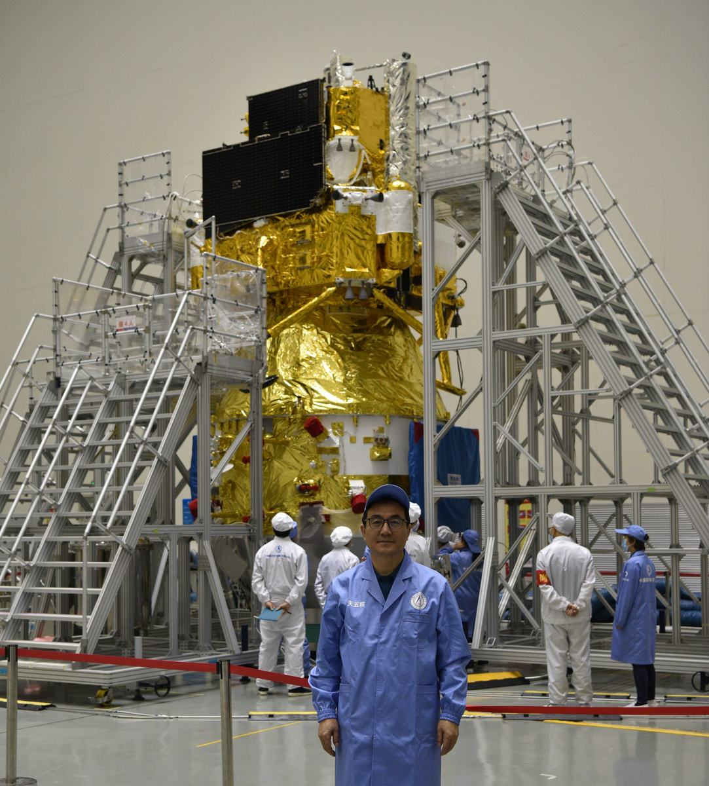
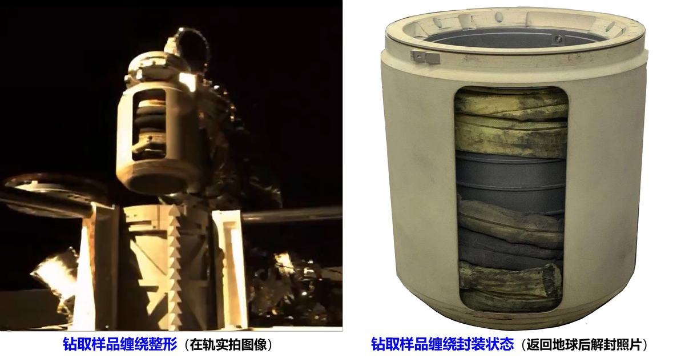
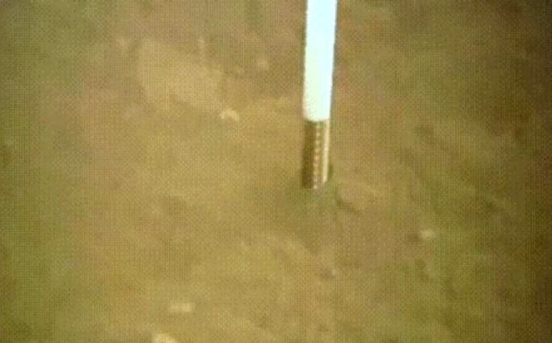

探月工程三期嫦娥五/六号任务的核心使命是月球无人自主采样返回。带有地质层序信息的深层月壤样品，能为月球成因和演化历史、资源赋存和可用性研究提供直接证据。钻取采样是获取深层保层序月壤样品的最有效手段。探月工程三期是我国首次地外天体采样返回任务，面临月壤及剖面特性非确知、月面环境极端、探测器重量/功耗/包络尺度约束苛刻、地月通信时延大等挑战。
自2011年起，项目组承研月球钻取采样国家任务，提出了面向月球采样设计理论与准则，首创了月球“钻-表-封”采样总体设计方案，攻克了月球钻取系统集成设计、地-月协同智能操控系统设计、月球钻取拟实验证装备设计难题，参与研制了嫦娥五/六号月球钻取系统型号产品，圆满完成了中国首次月球正面钻取采样任务(2020年)、世界首次月球背面钻取采样任务(2024年)。
嫦娥五/六号分别获取260克（地质学年龄最轻）和320克（背面唯一）保持层序信息的深层月壤样品，两次任务均刷新了月球无人自主钻取采样量世界纪录（Luna24为170克）。项目获省部级科技一等奖3项，授权发明专利50件、登记软著1项、专著2部，发表SCI/EI论文60篇。系统设计方法等相关成果已拓展用于嫦娥七/八号就位采样探测、天问三号火星采样返回等任务，开创了我国星球采样探测系统设计范式和技术体系。
月球采样返回能力和技术体系，是航天强国的战略竞争高地，直接决定深空探测国际话语权和未来生存空间拓展权。月球采样返回任务难度巨大，成功率极低，截至2020年，全球仅美-俄两国实现了月球采样返回。我国探月工程三期嫦娥五/六号任务的核心使命，是实现月球无人自主采样返回。钻取采样是获取带有地质层序信息深层月壤的最有效手段，钻取样品能为月球成因和演化历史、资源赋存和可用性研究提供直接证据。获取高价值月球样品并返回地球研究，对我国行星科学和深空探测领域创新发展与国际引领具有重要战略意义。
探月工程三期是我国首次星球采样返回任务，研发条件零基础、无经验可继承，面临月壤及剖面特性非确知、月面环境及工程约束极苛刻、地月通信时延大等挑战。自2011年起，项目组承研月球钻取采样国家任务，提出了面向月球采样设计理论与准则，首创了月球“钻-表-封”采样总体设计方案，攻克了月球钻取系统集成设计、地-月协同智能操控系统设计、月球钻取拟实验证装备设计难题，参与研制了嫦娥五/六号月球钻取系统，圆满完成了中国首次月球正面钻取采样任务(2020年)、世界首次月球背面钻取采样任务(2024年)。
我国首次开展星球采样返回任务，无经验可继承，并且面临月球极端环境和苛刻工程约束等多重挑战，不能照搬地球钻探方法和设计，亟需提出面向系统设计、建造、验证与在轨操控等方面的创新设计理念：
（1）工程安全与科学品质双目标兼顾理念：钻进-取芯-整形-传送-展开复杂序列动作环环相扣，任一环节失误将会导致整个任务失败，工程安全是首要问题，而带有剖面信息的样品保层序采集和收纳是高品质采样的硬性科学需求，两者需同时兼顾。
（2）面向非确知月壤组构的钻进高适应设计优先理念：以钻进高适应优先为设计目标，并非以破碎能力最优设计为导向，强化颗粒拨移置换能力，实现对非确知月壤组构高适应性钻进。
（3）剖面月壤保层序高科学品质取样设计理念：既要“取得多”又要“取得好”，不仅追求剖面样品总的取样量，更要保持样品的层序信息完整性。
（4）月球钻取系统轻量化-高集成度设计理念：通过高功率密度驱动设计、轻量化材料体系引入、机构/结构/传感集成，实现钻取系统的轻量化与高集成。
（5）突破性创新设计与可靠性优先理念：创新性设计是钻取采样作业的必需，需建立在高成熟度技术的继承基础上，需坚持“可靠性优先”的航天设计原则。
（6）月球钻取效能相似性-等效性-覆盖性验证理念：模拟月壤成分与组构高相似、在力学苛刻度上具有等效性、月壤剖面工况宽覆盖，为钻取采样系统地面作业效能的有效验证提供物质砝码与平台支撑。
（1）样品防污染设计准则：从源头入手，钻具、封装物等关键部件选用高耐磨、高稳定材料，防止脱落污染样品；钻进过程严控热，防止月壤样品及蕴含的挥发分物质热致性变。
（2）系统冗余设计准则：关键部件应具备冗余能力，驱动电机采用双绕组等设计避免单点失效，动力裕度至少满足2倍以上，提升系统在复杂作业工况下的可靠性。
（3）状态监测资源配置准则：复用驱动电机电流、编码器等信息，配置拉力、提芯力传感与图像资源，实现欠资源条件下作业状态最大程度监测，服务于在线辨识和操控。
（4）地月协同操控设计准则：在轨无人自主操控与地面遥控专家决策相结合，提高复杂作业工况下系统的风险应对能力。
（5）钻取作业策略设计准则：力图保证进样样品品质，不追求钻进深度指标，避免盲目钻进带来的样品错序、掉样等风险，充分考虑钻取作业面临的工况与应对预案，采用时空双域约束钻取作业操控策略。
嫦娥五/六号任务是我国月球探测工程“绕、落、回”战略的关键一步，旨在实现月球无人自主采样返回，其核心工程目标是突破月表复杂环境下的高可靠采样封装技术，获取具有区域代表性和地质多样性的月球样品；科学目标则聚焦通过获取月球正面风暴洋区域（嫦娥五号）和背面艾特肯盆地（嫦娥六号）的月壤样品，揭示月球晚期火山活动历史、月壳物质组成及撞击演化过程，为研究月球热演化机制、太阳系早期撞击历史及月球资源可利用性提供直接科学证据，推动行星科学的前沿探索。
（1）探测器组合体着陆姿态及其质量特性：探测器受落区地形影响产生倾斜，各支撑腿不相等压缩，姿态的变化同时影响空行程预估和钻具触月点的判断。
（2）着区环境特性及其约束：探测器面对月面大温差、高真空、强辐射、光照分布不均等极端环境，对探测器热控与姿态控制提出了严苛要求。
（3）剖面月壤的物理特性：月壤剖面矿物类型和组构未知，剖面层序分化明显。月表存在大尺度岩块，剖面中含有不均匀分布的岩块和不同粒径的颗粒。
（4）地月通信链路配置及地面支持能力：中继星作为传输遥测数据和地面专家决策的链接，存在8小时的不可测控弧段，作业超时将导致任务中断、任务周期延长，增加潜在风险。
图 1 月基工作场景图
面向同时获取深层钻取样品与表层铲挖样品的任务目标，针对固定点位钻取和广域多点表取两种差异化取样方式，以及低漏率防污染与高收纳比密封等要求，开展了多方案对比分析，提出“主器安全性影响尽量小、最大功耗小、作业时间最少、可靠性满足要求”的优选准则。形成了钻取-表取-封装一体化集成方案，成功应用于嫦娥五/六号月面无人自主采样任务。
图 2 嫦娥五/六号月球钻-表-封总体采样方案和技术体系
面向机构在着陆器安装约束和任务全过程中的复杂载荷扰动难题，设计了“主-次两体+柔性连接”的构型方案：1）钻取机构采用立式壳体结构，通过机械接口与着陆器连接，兼顾刚度、强度与热控需求；2）整形机构与上升器机械连接；3）钻取机构和整形机构通过展开机构柔性联接，适应跨器两端的位移与变形；4）控制单元布置于着陆器舱内，各机构通过可插拔电缆与其连接，满足力学、电气、热控及信息接口要求。
图 3 钻取采样系统总体布局与接口设计
针对探测器定点作业时面临的复杂月壤组构不确定性问题，构建了标准化的钻取作业动作节拍流程，如图4所示，为机械制造、材料工艺匹配、自动化控制等多学科协同研发提供了统一的物理架构和设计依据。
图 4 钻取动作节拍设计
针对月球极端环境下的全寿命周期可靠性挑战，钻取采样系统采用多维度环境适应性设计：
（1）力学适应性：通过全寿命周期抗力学设计，确保系统在发射冲击、地月飞行、月面作业及返回着陆等各阶段满足强度与刚度要求，保障结构存活性；
（2）热真空适应性：基于真空冷焊防护准则，采用固体润滑与异种材料间隙配合设计，避免冷焊失效；针对-180℃~130℃大温差工况，结合主动加热（温敏元件加热片）与被动热控（多层热控膜）技术，实现热应力匹配与热变形协调；
（3）防月尘卡滞设计：进给机构设计有导轮滑轨滚动副与螺旋栅格排尘实现容尘功能；缠绕整形机构采用带容尘槽的丝杠设计，有效降低月尘卡滞风险。
（1）渐阔双排阶梯式取芯钻具构型设计
针对钻进扰动大、非确知强随机月壤组构等挑战，创新设计了月壤适应型钻具：双排阶梯离散刃钻头通过内外刃差异化高度/角度设计实现自定心钻进与高效破碎；双螺旋空心钻杆采用渐阔流道与变翼螺旋协同优化排屑性能；一体式阻隔环确保排屑-取芯流场分区导流。配合硬质合金-碳化硅铝基复合材料，该钻具系统在嫦娥五/六号任务中成功实现600℃下对50mm厚-Ⅷ级月岩的连续采样。
图 5 渐阔双排阶梯式取芯钻具设计
（2）非确知月壤组构组合式钻进工艺设计
面向极端月面环境下强随机月壤剖面组构的高适应性钻进挑战，针对月壤适应型钻具构型设计了“冲-切-排-拨-挤”钻进工艺：1）内刃多点冲击突破岩石；2）外刃多面切削破碎大颗粒；3）渐阔排粉槽与双螺旋槽道高效排粉；4）内刃多点挤拨置换侧方颗粒，钻进工艺动态组合实现了月壤大颗粒破碎、拨移及岩石切削功能。
图 6 非确知月壤组构组合式钻进工艺设计
（1）双管单袋无滑差取芯机构设计
针对薄壁贯入、单管钻取等传统取芯方法易卡滞、难连续作业问题，创新设计了“双管单袋”无滑差取芯机构：1）采用与钻杆轴向同步进给-周向不回转的双层护管，护管间套叠取芯软袋。钻进时进入到钻杆内的样品，与内翻至取芯管内的软袋之间始终保持无滑动状态，月壤样芯始终被取芯软袋连续包覆；2）末端集成薄壁导流环，其分瓣式柔性设计兼具径向定心与间隙优化功能，降低了颗粒卡滞风险。该机构实现了深层月壤连续取芯与软袋随动包覆保层序取样。
图 7 双管单袋无滑差保层序钻取采样方法和工作原理
（2）月壤样品软袋多道异构封口设计
针对软袋抖动导致的样品层序错位及密封可靠性问题，创新设计了多道异构封口技术：1）塑性回弹封口通过簧片不可逆变形实现径向密闭；2）超弹性封口利用八字簧预紧力完成末端自密封。两种方式通过机构运动自动触发封口动作，实现样品封装的自适应密闭功能，有效解决了月壤样品层序保持的难题。
图 8 软袋多道异构封口设计
（3）钻取过程样品进样状态监测设计
针对月面复杂工况下的取芯力测量难题，创新采用分体式旋转结构，集成导向与测量功能，导向绳索驱动旋转块绕回转轴偏转，通过压力传感器实时转化位移信号为拉力数据，实现实时提芯力监测和进样引导。
图 9 导向绳索拉力测量结构设计
（1）共轴解耦型回转-冲击一体化驱动机构设计
面向未知月壤组构的大力载高效能钻进需求，设计了共轴解耦型回转-冲击复合驱动机构：1）构建密珠-滚动花键双自由度轴系，实现回-冲传动链的无耦合共轴输出；2）采用滚动储能式凸轮脱扣驱动冲击机构，可输出10J级高频脉冲功；3）提出了“冲上回下”的主-辅功能隔离架构，提升关键驱动链的容错能力与系统稳定性。实现复杂剖面条件下复合驱动系统的高功密输出与可靠运行。
图 10 回转-冲击一体化驱动机构设计
（2）柔性大行程进给驱动机构设计
面向苛刻工程约束下大行程可控钻进难题，设计了柔性大行程进给驱动机构：1）采用双向卷绕钢丝绳传动结构，实现2米级钻具升降驱动；2）钢绳本体具备显著柔性特性，兼具预压缩能力与冲击缓释功能，可延迟故障传递、提升系统鲁棒性。有效保障冲击作业下的大行程进给精度与稳定性。
图 11 柔性大行程进给驱动机构设计
面向月球采样探测任务对系统可靠性和轻量化的严苛需求，传统多电机分布式驱动方式难以满足探测器结构冗余最小化的设计原则，提出了单电机驱动的提芯-整形-分离-传送一体化机构设计方案：1）设计了顺序运动机构，回转轴与导向组件比例耦合，实现软袋高收纳比螺旋缠绕；2）设置棘轮与剪切销，通过反转切断剪切销实现分离。提升了采样链路的闭环稳定性与在轨可靠性。
图 12 样品提芯、整形、分离与传送机构集成设计
面向月面低重力环境与姿态不确定带来的展开力矩不足问题，提出了“双涡簧驱动+行星绳系增力”复合设计，采用“涡簧驱动+绳系增力”组合方案，有效放大驱动臂长，实现小拉力驱动大转动，实现了复杂着陆工况下的高可靠展开。
图 13 展开机构组成及构型
（1）钻取采样地-月协同智能操控系统设计
月面钻取作业中继通信时延大、机壤作用下具有高动态与非线性特征，传统遥操作难以应对强随机月壤组构带来的负载突变事件。提出了“在轨预编程+地面专家决策+中继中断下盲钻”的天地协同操控系统设计方案，基于钻取规程指令集与多源遥测状态感知，实现作业模式自适应切换与风险在线识别，国际首次实现了负载安全和取样品质双目标协同以及无通信盲钻的自主操控。
图 14 月球钻取采样地-月协同智能操控系统
（2）自主钻取作业在轨预编程设计
针对强随机月壤组构、机壤作用强动态特征等难题，设计了在轨自主钻取预编程：1）建立钻进响应知识库与剖面组构映射模型，支撑作业效能与风险预测；2）提出回转-冲击-进尺三级差分档配置方法，形成覆盖典型月壤工况的3类模式、30种组合的钻进规程指令集，实现在轨规程自主寻优与驱控参数动态调控。
（3）钻取作业地面智能支持系统设计
面向有限在轨算力资源下系统状态快速辨识与针对性决策难题，设计了地面智能支持系统：1）构建多源遥测驱动的“状态感知-判读决策-指令发布”闭环链路，实现系统状态与样品品质的在线快速辨识；2）嵌入了力学触探与图像感知融合的原位力学特性解译算法，实现了月壤原位力学特性反演。
图 15 钻取作业地面智能支持系统设计
面向钻取系统效能高拟实等效验证需求，设计了高等效、宽覆盖的地面拟实验证系列装备。1）基于月壤相似性与覆盖性原则，制备了力-热-粒径级配等多参数等效模拟月壤；2）设计了覆盖提芯、整形、传送、展开等机构的专用验证装备，支撑关键部件功能可靠性与性能参数评估；3）研制了集成真空、高低温、低重力等多状态耦合的钻取效能综合试验平台，实现了极端环境下全包络月壤剖面钻进作业效能的实测验证，解决了钻取采样器月壤钻取能力等效性、包络性实测评价的技术难题。
嫦娥五/六号圆满完成了我国首次月球正面和世界首次月球背面钻取采样任务，分别获取260克、320克剖面月壤（Luna 24为170g）。嫦娥五/六号月球钻取采样系统完成了“钻进取芯-软袋封口-缠绕整形-定向传送-真空封装”月面复杂序列预定执行动作。两次任务，在月球正面风暴洋吕姆克山区玄武质低成熟度月壤、月球背面艾特肯盆地阿波罗撞击坑玄武质-斜长质混杂月壤高差异地质条件下，均实现了高适应钻进和可靠取样。取芯率均超过84%（Luna24取芯率为71%），经返回样品的剖分观测和探地雷达图像佐证，取芯软袋内的月壤样品层序保持良好。两次任务均圆满成功，月球钻取采样系统设计的有效性得到了充分验证。
图 16 嫦娥五/六号月面钻取采样作业结果统计
两次任务均刷新了人类月球无人自主钻取采样量世界纪录，获得了月球正面纬度最高/地质学最年轻、月球背面唯一的珍贵样品，实现了我国月球采样探测技术从跟跑到领跑的技术跨越，社会效益极其显著。习近平总书记指出：“嫦娥五号任务圆满成功，是我国航天强国建设征程中的重要里程碑！”“嫦娥六号在人类历史上首次实现月球背面采样返回，是我国建设航天强国、科技强国取得的又一标志性成果！”



600℃ 连续钻取 50mm 厚 Ⅷ级月岩;双管单袋无滑差取芯、地月协同盲钻,两破人类月球钻取采样量纪录(260g/320g, Luna24 为 170g)
工程装备,外形服从重量/功耗/包络约束,设计语言简洁功能化
为科学家的深层月壤层序需求而设计——「取得好」胜过「取得多」
国家任务属性;技术体系已拓展至嫦娥七/八号与天问三号,产业溢出待转化
中国首次月球背面采样返回,两破世界纪录,国民级科技自信符号
月球正面（嫦娥五号，2020）与世界首次月球背面（嫦娥六号，2024）无人自主钻取采样。月面环境极端、月壤及剖面特性非确知、地月通信时延大（38 万公里），探测器重量/功耗/包络约束苛刻。
首创月球「钻-表-封」无人采样总体方案，一次任务同时获取表层与深层两类样品（国际首次）；构建地-月协同智能操控系统，提出时-空双域操控策略与故障预案，实现钻取作业风险快速在线辨识。
双管单袋内翻包覆无滑差钻取采样机构，从机理上解决传统取样力链卡滞导致的进样阻塞；「钻进-取芯-提芯-整型-传送-展开」全链路取样机构，高功率密度驱动、轻量化高集成。
大尺度连续保层序取样工艺：600℃ 连续钻取 50mm 厚 Ⅷ 级月岩模拟物；钻进过程严控热以防样品热致性变；源头防污染设计。两破人类月球钻取采样量纪录（260g/320g，Luna24 为 170g）。
钻具与封装物选用高耐磨、高稳定材料防止脱落污染样品；引入轻量化材料体系，机构/结构/传感一体化集成。
① 从「破碎能力最优」转向「钻进高适应优先」——面对非确知月壤，不追求钻得多快，而强化颗粒拨移置换能力，让钻具适应任何月壤组构。② 「取得好」胜过「取得多」——样品价值在层序信息，保层序成为压倒取样量的设计目标。③ 双管单袋「内翻包覆」——把样品柔性包覆进取样袋而非硬推硬拽，从机理上绕开力链卡滞。
研发条件零基础、无经验可继承（2011 年起步时全球仅美俄实现月球采样返回）；不能照搬地球钻探方法与设计——团队为此重建了面向月球采样的设计理论与准则，并构建「相似性-等效性-覆盖性」地面验证体系，用模拟月壤在地面穷尽剖面工况。